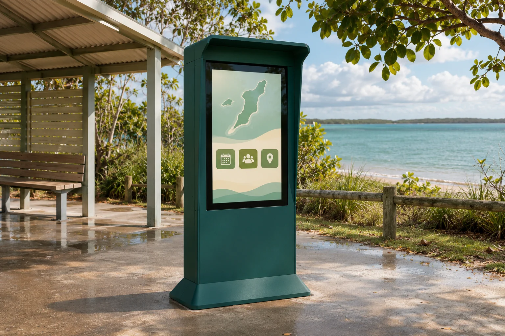

Power keeps the screen on
Test the battery with the display and the player together.
What could someone still read if the power went out at a ferry stop? A battery can keep the screen running. A saved local copy can keep approved notices and maps available when the internet drops. Each host would need to test both.

Each site would need to test power and the internet separately, then rehearse what happens when both fail.
Test the battery with the display and the player together.
Open the approved text and maps without an internet connection.
Save a plain-text copy of approved notices and a small set of public maps and guides. Test the battery-backed touchscreen in an essential mode with text and simple maps.
Show when the source was last verified, in Queensland local time. Take down expired everyday notices. If an official warning can’t be rechecked, display “Current status unavailable”. Only the issuer can update or cancel it.
Agree how official notices could be relayed with the issuing organisations. Keep the warning’s original instructions, issuer, affected area and times intact.
Agree with the bus operator and vehicle owner how the passenger display starts and stops with the vehicle and how it behaves through patchy coverage. Use supported equipment and power. If the network copy can’t be verified, pause community notices and leave travel information to the operator’s established channels.
Agree a restart and fallback with the site owner, stop asset owner and transport operator. Keep official signs visible and maintain a clear boarding area. Where independent power is designed in, test the complete display and player in the conditions at the stop.
Scroll the table sideways to compare both screens.
| Condition | Ordinary venue TV | Battery-backed touchscreen |
|---|---|---|
| Mains power fails | A mains-only TV goes dark. The host puts up the agreed printed information. Any backup would need to power the TV and its player together. | The display and player can continue for their tested battery runtime. Check the connection separately. If it is down, use the saved copy. |
| Internet link fails | Use a verified copy saved on the player if the venue has tested offline start-up. Otherwise use the printed information. | Start the installed copy with essential text, saved maps and guides. Show “Offline” and the source’s last verified date and time. |
| Device clock is unreliable | Switch to standing information and pause time-limited everyday notices. Label the time check as unavailable. Keep the issuer’s original time on any retained warning and make its unchecked status visible. | |
| Battery runs low | If the host installed backup power, follow the site’s tested switch-over to printed information. | Switch to the essential display at the site’s agreed point. When the device must shut down, use the printed information and hand over to the host. |
| Power or internet returns | Confirm the device clock, check the issuer for new messages or withdrawals and verify the approved update on the screen before resuming normal rotation. | |
Divide the usable battery energy in watt-hours by the combined measured power in watts. These starting values are a worked example. Replace them with your venue’s measurements.
53 W total · 400 Wh after reserve
Inputs changed. Estimate the runtime again.
This is a planning estimate. At the venue, run the screen at its usual brightness with the player and any required router attached. Measure runtime and record the battery’s age, weather, connection and restart behaviour. Repeat under likely site conditions before setting a local operating limit.
The estimate applies the distinction between battery nameplate capacity and usable energy to a noticeboard installation. Sovereign Capacity Lab’s solar and storage workbench
Imagine a Dunwich film workshop moving from 10 am to 11.30 am while a venue screen in Amity Point is offline. In this island-wide rehearsal, send the organiser’s correction to the selected outlets, including the mobile board, and check which screens have replaced the older copy. Try the workshop handover.